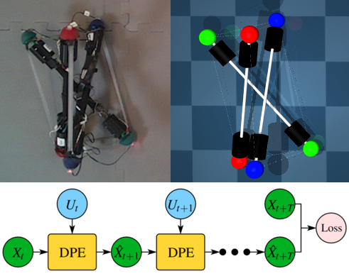

|

|
|
Abstract:
Tensegrity robots, composed of rigid rods and flexible cables, are difficult to accurately model and control given the presence of complex dynamics and high number of DoFs. Differentiable physics engines have been recently proposed as a data-driven approach for model identification of such complex robotic systems. These engines are often executed at a high-frequency to achieve accurate simulation. Ground truth trajectories for training differentiable engines, however, are not typically available at such high frequencies due to limitations of real-world sensors. The present work focuses on this frequency mismatch, which impacts the modeling accuracy. We proposed a recurrent structure for a differentiable physics engine of tensegrity robots, which can be trained effectively even with low-frequency trajectories. To train this new recurrent engine in a robust way, this work introduces relative to prior work: (i) a new implicit integration scheme, (ii) a progressive training pipeline, and (iii) a differentiable collision checker. A model of NASA's icosahedron SUPERballBot on MuJoCo is used as the ground truth system to collect training data. Simulated experiments show that once the recurrent differentiable engine has been trained given the low-frequency trajectories from MuJoCo, it is able to match the behavior of MuJoCo's system. The criterion for success is whether a locomotion strategy learned using the differentiable engine can be transferred back to the ground-truth system and result in a similar motion. Notably, the amount of ground truth data needed to train the differentiable engine, such that the policy is transferable to the ground truth system, is 1% of the data needed to train the policy directly on the ground-truth system.
|

![[PHOTO]](../../images/knight_small.png)